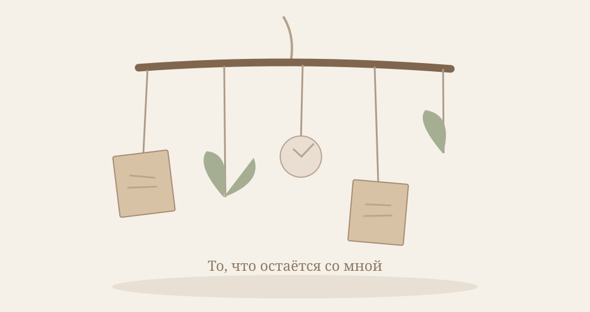

Потеря работы редко бывает только потерей места, куда мы приходили каждое утро.
Вместе с ней может исчезнуть привычный порядок дня, ощущение нужности, уверенность в завтрашнем дне. Иногда — люди, с которыми мы общались годами. Иногда — представление о себе, которое долго складывалось вокруг профессии.
Даже если мы сами хотели уйти, перемены могут оказаться сложнее, чем ожидалось.
Мы можем испытывать облегчение и тревогу одновременно. Радоваться свободному времени и не знать, что с ним делать. Сравнивать себя с другими, торопить себя, требовать немедленно найти новое место.
Особенно трудно, когда потеря работы не была нашим выбором.
Но завершение профессионального этапа не отменяет наших знаний, опыта, способностей и всего, что мы уже создали.
Мы не становимся менее ценными, когда перестаём занимать определённую должность.
И, возможно, прежде чем искать следующую работу, важно дать себе немного пространства, чтобы понять, что именно мы потеряли, что осталось с нами и чего хотим теперь.
Материалы и практики
Можно выбрать одну практику или попробовать все три. Художественный опыт не нужен. Здесь важнее процесс, чем результат.
✂
1. То, что остаётся со мной
Коллаж профессионального пути · Можно выполнить дома
Иногда кажется, что вместе с работой исчезает всё, что делало нас уверенными. Но наш опыт остаётся с нами.
Открыть практику
Что понадобится
Бумага, старые журналы, клей, ножницы, фотографии или слова — по желанию.
Как выполнять
Вспомните разные этапы своего профессионального пути: не только успехи, но и трудные моменты, встречи, открытия.
Выберите изображения, слова, цвета и фактуры, которые напоминают вам об этих этапах.
Соберите коллаж без хронологии и оценок. Пусть в нём появится всё, что вы считаете частью своего опыта.
Посмотрите на работу и отметьте то, что принадлежит вам независимо от должности и места работы.
Вопросы для размышления
Какие качества и умения остаются со мной?
Что я узнал(а) о себе в трудные периоды?
Что я хочу взять с собой в следующий этап?
Не нужно искать правильный ответ. Дайте себе время заметить то, что появляется в процессе.

2. На что я могу опереться?
Мобиль из воспоминаний · Можно выполнить дома
Когда привычная опора исчезает, может казаться, что вместе с ней пропало многое. Но наши воспоминания, связи, умения и опыт остаются с нами. Попробуем сделать их видимыми в подвижной композиции.
Открыть практику
Что понадобится
Небольшая веточка или лёгкая деревянная палочка, нитки, бумага, ножницы, скотч; по желанию — маленькие фотографии, сухие листья или другие лёгкие памятные детали.
Как выполнять
Вспомните несколько людей, мест, занятий, качеств или событий, которые продолжают поддерживать вас независимо от работы.
Для каждого воспоминания выберите лёгкий символ: слово на бумаге, маленький рисунок, фотографию или лист.
Прикрепите символы к нитям и подвесьте их к веточке на разной высоте. Веточку можно положить горизонтально между двумя опорами или держать в руках, чтобы увидеть композицию.
Осторожно меняйте длину нитей и расположение деталей. Посмотрите, как композиция откликается на движение и как меняется её равновесие.
При желании добавьте один свободный элемент — место для поддержки, которую ещё предстоит обнаружить.
Вопросы для размышления
Что из моей жизни остаётся со мной, даже если работа изменилась?
Какие связи и воспоминания поддерживают меня сейчас?
Как я отношусь к тому, что равновесие может быть подвижным?
Какую поддержку я могу попросить у других?
Мобиль может двигаться и всё же оставаться целым. Устойчивость не всегда означает неподвижность. Не нужно добиваться идеальной симметрии.
▤
3. Следующая страница
Книга-гармошка · Можно выполнить дома
Необязательно сразу знать, какой будет новая работа и каким окажется следующий этап. Можно оставить место неизвестному.
Открыть практику
Что понадобится
Несколько листов бумаги, клей или скотч, карандаши, журнальные вырезки по желанию.
Как выполнять
Сложите длинную полосу бумаги гармошкой или соедините несколько листов.
На первых страницах разместите образы того, что завершилось. Можно использовать цвета, слова, линии.
Средние страницы посвятите сегодняшнему дню: тому, что вы чувствуете и что вам сейчас необходимо.
Последние страницы оставьте свободными или обозначьте на них только небольшие возможные шаги.
Разверните книгу целиком. Заметьте, что пустые страницы — тоже часть вашей истории.
Вопросы для размышления
Что я хочу оставить в прошлом?
Какой небольшой шаг сейчас мне по силам?
Могу ли я позволить себе пока не знать всей истории?
Не нужно искать правильный ответ. Дайте себе время заметить то, что появляется в процессе.
Моё маленькое открытие
Если хочется, запишите одну мысль, которую заберёте с собой.
Небольшие шаги в повседневности
Потеря работы может затронуть не только чувства, но и повседневную безопасность. Можно постепенно вернуть удобный ритм дня, обсудить ситуацию с человеком, которому доверяете, уточнить доступные финансовые и профессиональные возможности. Не обязательно решать всё сразу.
Попробуйте выбрать один посильный шаг на ближайшие дни — и оставить место для отдыха.
Индивидуальная поддержка
Если хочется разобраться с переживаниями после потери работы, восстановить опоры и найти собственный темп дальнейших шагов, можно обратиться за поддержкой.